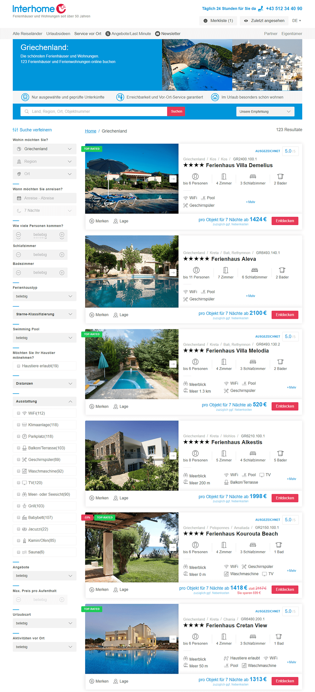
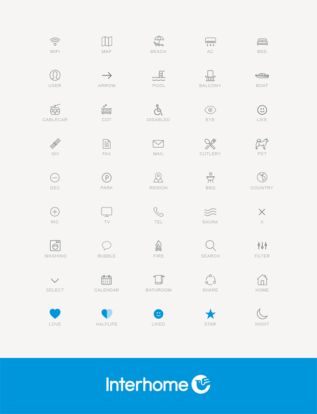

Interhome & Interchalet bieten über 33.000 qualitätsgeprüfte Ferienhäuser und -wohnungen online an. Zusammen mit dem Interchalet Team in Freiburg war ich maßgeblich an der Umsetzung der neuen mobiltauglichen Website beteiligt, welche iterativ und agil mit SCRUM umgesetzt wurde. Die multinationalen Websites beider Marken erreichen jährlich ein Millionenpublikum.
Mein Beitrag bestand aus der Gestaltung und Umsetzung von Teilen der Startseite, dem Großteil der Suchseite (Trefferseite) sowie der Detailseite. Jede Seite wurde iterativ Modul für Modul von mir auf Basis von Anforderungen und Feedback gestaltet und präsentiert. Nach Abnahme der Screendesigns wurden die grafischen Konzepte zunächst als statische HTML-Protoypen realisiert und anschließend mit JavaScript alle Frontendinteraktionen programmatisch umgesetzt. Auch hier unter laufender Integration von Feedback und Absprache mit den Teams in Freiburg (DE) und Glattbrugg (CH).
Pug.js > HTML
Um einen effizienteren und modularen HTML-Workflow zu erzielen, schlug ich die Verwendung von PUG.js vor, welches HTML um Includes, Mixins, Variablen, Schleifen und Abfragen erweitert und aus HTML, einer Beschreibungssprache (Markup-Language), eine Programmiersprache macht. Diesen Vorschlag konnte ich mit Erfolg durchsetzen.
Einheitlicher Workflow durch Gulp.jsUm zwischen den verschiedenen (und ggf. neu hinzukommenden) Entwicklern und Designern einen einheitlichen Workflow zu schaffen, schlug ich aus eigener Initiative das Workflow CLI-Tool Gulp.js vor. Durch ein einheitliches Set aus Befehlen und Buildprozessen kann die Arbeitsweise und die verwendeten Tools vereinheitlicht werden und modular weiterentwickelt und um Plugins erweitert werden. Und das plattformunabhängig (Windows, MacOS, Linux dist. kompatibel). Auch dieser Vorschlag wurde übernommen.
So ist es nun beispielsweise möglich, einen lokalen Entwicklungsserver zu starten, automatisiert einen Proxytunnel zu öffnen, um auf verschiedenen Geräten zu testen, SCSS zu kompilieren und CSS zu komprimieren sowie einiges mehr.
Frontendlogik mit JavaScript
Durch meine Fähigkeit und Erfahrung zur Umsetzung von interaktiven Modulen und Elementen im Frontend mit JavaScript wurde mir die Umsetzung einiger performance- und Usabilitykritischer Module anvertraut.
1. Omnibox - Um die UX-Vorteile eines Dropdown-Selektors mit der Schnelligkeit einer Textsuche zu vereinen entwickelte ich eine universell Einsetzbare Omnibox, welche passend zur Eingabe im Textfeld relevante Vorschläge anzeigen kann. Dabei arbeitete ich mit statischen Daten, die später vom Entwicklerteam in Freiburg mit Echtdaten aus der Datenbank erweitert wurde.
2. Datepicker - Basierend auf Longbills Daterangepicker und passend zu den Anforderungen integrierte ich das Plugin in die entsprechenden Seiten und erweiterte u. a. die Funktionalität der Tooltips, damit diese verschiedene Zustände annehmen können. So werden beim hover Zustand nicht nur die Anzahl der Nächte berechnet und angezeigt, sondern auch UX steigernde, anweisende Informationen wie "Bitte wählen Sie nun das Abreisedatum aus" oder "Keine Anreise möglich". Probieren Sie es aus!
3. Bildergalerie - Die Anforderungen an den neuen Bildslider spiegelten die ambitionierten Ziele des ganzen Projekts wieder. Schnelle Interaktion, effizienter Code, erweiterbare Funktionalität und die Einsparung von Bandbreite waren Basisanforderungen an dieses Modul. Nach der Umsetzung des Designs in Photoshop und der statischen Umsetzung des Prototyps, entwickelte ich eine 611 Zeilen lange jQuery-Erweiterung für das beliebte Unslider.js Plugin, welches dieses um Lazyloading, diversen Performanceoptimierungen und einer Thumbnail-Funktionalität erweitert. Diese Erweiterung ist als Open Source Projekt auf GitHub zu finden.
4. UI Elemente - Weniger fordernd, aber auch wichtig war die Programmierung von diversen Interfaceelementen über die gesamte Website verteilt. Von der gesamten Filtersuche auf der Suchergebnisseite auf der linken Seite über die Hauptnavigation mit Flyout bis zur mitscrollenden Sidebar der Detailseite basiert eine maßgebliche Menge aller möglichen Frontendinteraktionen auf meinem Code.
Enough Tech Talk - Iteratives Design!
Basierend auf der Marke, der Zielgruppe und den Vorstellungen & Wünschen des Teams entwarf ich zunächst eine alternative Designsprache zu einem bereits existierenden Entwurf. Modern (und möglichst minimalistisch) zu designen ist eine Herausforderung, wenn das Sicherheitsgefühl des Kunden, einfache, Konventionen befolgende Bedienkonzepte und eine große Menge an Informationen im Vordergrund stehen. Trotzdem sollte das neue Design kein Kompromiss, sondern das neue unverkennbare Gesicht der Marke Interhome im Web sein und ein entsprechendes Look & Feel vermitteln. Mein Konzept fand gefallen und entwickelte sich iterativ durch Feedbackrunden zu dem, was heute online sichtbar ist und Millionen von Nutzern jährlich ab sofort mit Ihrer Lieblingsmarke zur Buchung von Ferienresidenzen verbinden.

Ein professioneller Styleguide ist in Arbeit, damit auch nach meinem Ausscheiden aus dem Projekt ein einheitliches visuelles Gesamtbild fortgeführt wird.

Ikonographie
Modern & deutlich unterstützen die einheitlichen Icons die schnelle Erfassung von relevanten oder gesuchten Informationen und Werten die Ästhetik weiter auf:
TLDR
Das Projekt hat mich in all meinen Kompetenzbereichen gefordert. Dank meiner interdisziplinären Erfahrung konnte ich alle Aufgabenstellungen und Hürden meistern und darüber hinaus meine eigenen Verbesserungsvorschläge und Feedback einbringen. Dadurch entstand ein aktives und offenes Arbeitsverhältnis und schließlich ein besseres Endprodukt.
Notiz: Dieser Beitrag kann nur einen kleinen Teil des Projekts darstellen. Codeausschnitte dienen als Beispiele und sind aus dem Kontext gehoben.